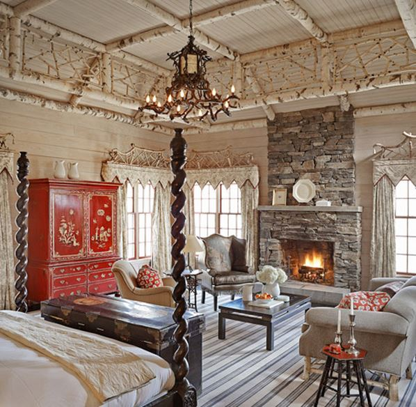

.png)
.PNG)
.PNG)
.PNG)
.PNG)
.PNG)
.JPG)
.JPG)
.PNG)
.PNG)


Happy Weekend! Did the change in time last weekend have your internal alarm clock confused this week? I had a hard time staying up late like I normally do, but I have loved waking up before the alarm has gone off. So here’s to an early start on a Saturday morning! 🙂 Lots of goodies to talk about with you today starting with this one….
This week we looked at some interiors by Kathleen Rivers, and many of us loved her yellow room at Chattooga Club. Well, I found another designer who has created spaces there, and you might want to take a look at her rooms. This talented lady is Meridy King. If you liked Kathleen Rivers’ rooms, I think you will like the work of Meridy.
I found an old article here about the 20 most expensive hotel rooms in America, and this one was on the list. I had not heard of it before, and although it is not a place I would put in our budget to visit, it does have some pretty rooms to see.
source
A more realistic place for us to stay might be this cute vacation rental in my favorite place – Highlands, North Carolina. The rental information is here, but a post by a photographer who has stayed there is here (much better photos than those on the rental site.)
(and I believe those drapes are made from the same fabric I had here looooong ago. 🙂 )

(Sorry for the fuzzy photo. It is very old.)
Another thing to talk about today is books! Look what I purchased last night…
I was in Book Heaven when I got home! (Well actually, when we stopped to fill the car with gas, I started reading them. LOL) The Sarah Richardson book is full of pretty rooms, and this one is my favorite.
I was disappointed that it did not include any photos of my two favorite houses she has done
the farmhouse…
nor the cottage. 🙁
On the other hand, the new Barefoot Contessa book looks to be all good – especially the desserts!
You can find the recipe for these cookies here.
And guess what else makes my heart happy about the book…
It’s red! 🙂
Another recipe you might like to try this weekend (especially for Thanksgiving) is this one from Fresh Market. You can purchase their divine Cranberry Relish in the store, but if you are not near one, the recipe will allow you to recreate it. It is so good you will want to eat it with a spoon! Seriously.
And speaking of Thanksgiving, here is a beautiful harvest party.
And here is a precious children’s Thanksgiving party.
A woodland theme for children’s parties seems to be quite popular right now.
Just look at these beautiful cookies for a baby shower!
Here is a vintage woodland baby shower that is precious. 🙂
And speaking of babies, here is the real talk of our weekend…

Do you remember our niece’s barn wedding I wrote about here? Well she and her husband are now the proud parents of this sweet little bundle…little Liza Meade, who was born on Thursday afternoon. Can you believe all that hair? (I bet her mom already has a bow in it. 🙂 ) Congratulations Phillip and Ashley!
And for the child in all of us…
Our daughter is home from college for the weekend, and she wants us to go see this movie…
Looks like a good one to me!
And that’s all the talk for today. I hope you have a great weekend. 🙂


.PNG)
Oooo, I’ve been wondering about the new Barefoot cookbook! Please share what you think of it once you’ve made some of the recipes.
LOL – my sister and her husband stayed at Twin Farms just last year, though not in that room. Theirs was all black and white toile – I didn’t love it, made me dizzy, haha. Oh, that baby shower – sooo cute! And the red doors – love 🙂
I adore that first room! I love that she made lamps out of the faux bois pots that I also own! So much inspiration here…love that Thanksgiving outdoor table….gorgeous!!
I just got Sarah’s book and I thought the same thing you did! So much so I left her a comment on Instagram suggesting her next book just be of her own houses where her personal style is displayed. I love her cabin and her farmhouse! I don’t usually buy cookbooks anymore but I was tempted by Ina’s! Love your post as usual!
———————————————————————-
Lynne, that was so smart of you to leave her a comment on Instagram. I wonder if she is getting bombarded with that…or is it just us Americans that really wanted to see those other houses? I am glad to know I am not the only one that thought that about the book.
Kelly
Kelly,
What fun! I do love the rooms you shared of Meridy King. Your dining room is charming…is that in a former house?
Woodland themed showers? That is a great idea and I really liked some of the cookie designs.
Congratulations on the darling bundle of joy that has joined your family! She’s precious.
I hope you had a wonderful weekend.
Karen
—————————————————————-
Hi Karen! The dining room is an old photo of our current room before we knocked down the wall between it and the kitchen (and took down the board and batten) years ago. Thank you for the congratulations on baby Liza. Our weekend was full of fun! Hope yours was too. 🙂
Kelly
Kelly,
I love this post! I think I begin all my comments on here that way.
The construction pieces in your niece’s wedding are extraordinary. What a unique way to enclose an outdoor space and make it feel intimate. I loved the invitations too.
I have to get the barefoot contessa book.
Have a good week!
DiAnne
——————————————————————
I don’t have a problem if you start every single one of your comments like that DiAnne! LOL Thank you for going back to check out the wedding post. It really was a beautiful celebration from start to finish with no detail overlooked for anything.
Kelly
Hey, Kelly. I loved this post, as usual! I love all of the links and little side trips I get to take visiting your blog. Our new son-in-law worked at the Chattooga Club while in college so I enjoyed seeing it. (He learned to cook some yummy dishes by watching the chef. And, we booked the wedding reception band that he enjoyed hearing at wedding receptions there.) You always share things I can so relate to…I just learned to make pretty cookies….. and my brother’s wife just had a beautiful little baby girl. And, just last night my friend and I were looking at cranberry sauce recipes! AND, Katrina, you are right….Kelly might be my sister!
——————————————————————
What a great mentor to have while working. (I would love it if some of my children would learn to cook from a chef!) Congratulations to your brother and his wife on their baby girl! How sweet. 🙂 Oh yes, we are definitely sisters. You just get to live in my favorite state!
Kelly
OK, now I want to buy books and go on holiday. And possibly have a baby (?! LOL)
Fab post. So glad you found the photographer’s site for the Highlands pictures – much better!!
England doesn’t have Thanksgiving but I am having a get-together the last weekend in November and am eyeing up the Cranberry Relish, but having difficulty visualising a pound of cranberries – if it is too much and there are leftovers does anyone know how well this freezes?
——————————————————————-
Too funny about the baby Frances! 🙂 Yes, the photographer’s professional photos are so much better than those on the website. I am afraid I do not know about freezing cranberry sauce/relish. Perhaps another reader will know. (Or maybe Martha Stewart has something on her site about it.)
Kelly
Love the red accent entry picture. I checked out Twin Farms. Ugh, Drool Fest! I’m so wishing we could have a warm Thanksgiving. It has been years since that occurred. I will be making the most of a little warmer weather tomorrow, as it will be much colder next week. Here we go…. I’m getting ready for a lot of “indoor cozy” to come. That harvest party would be so fun and I loved the little woodland shower you featured. Well, my niece just told us she is expecting too. She will deliver May, 2015. Congratulations on your sweet little great niece. How fun.
——————————————————————–
Best wishes to your niece, Debra! We also have another niece who is expecting, and the baby is due this winter. There must be something in the water!
Kelly
Congratulations on your great niece! She is precious!! Lots of inspiration and eye candy in the photos. Love the children’s table. How cute! Hope you have a great weekend!
——————————————————————-
Thank you Jayne! I think she is pretty precious too. We did have a great weekend – although a very busy one. Hope yours was a fun one as well.
Kelly
Hi Kelly,
I put away the groceries (did all my prepping (sigh)), grabbed a glass of wine, and then said it is time for Talk of the House weekend edition. It did not disappoint. I loved Talk of the Weekend #8. Thank you!
I really enjoyed reading this post and seeing the wonderful room pictures and book features and recipes, but the best part by far to me was the picture of that beautiful baby at the end…perfect and precious! Thank you for the movie recommendation, too.
Paula
Oh, oh, and oh baby!! Love seeing everything but especially the new baby!! I remember the posting about your niece’s wedding is when I first found you and your blog and did not know anything about blogs! I just ” happened” upon it and fell in love with TOTH!! Woodland is my favorite theme– even designed my granddaughter’s nursery 20 years ago in Beatrice Potter and still love her illustrations. One year here at the lake house, we had a Thanksgiving fish fry with all the trimmings on a beautiful Indian Summer Sunday afternoon. Have always wanted to have an old fashioned outdoor turkey feast!! What a wonderful post today– cool and cloudy here with a chance of rain– real cozy– making menus for the holidays and watching Hallmark movies with my daughter. Hope you are enjoying your time with your daughter, too!:)
Ina Garten and Sarah Richardson are two of my favorites as well Kelly. And we are going to see Big Hero Six on Tuesday! It is a treat for the grands for their good report cards. And that is a very sweet baby…love her name!!
Kelly, I have made a similar cranberry relish in the past. It is also a great, easy appetizer when placed on top of crackers spread with cream cheese.
Kelly,
I received both of the books from Amazon Prime the day they were published…could hardly wait to get home from work to read them! I have all of Ina’s cookbooks, have made many of her recipes, and can’t recall a one of them falling short of my expectations. I am enjoying the Sarah Richardson book as well. I love her use of color, and mix of modern, traditional and vintage, especially the pops of color from quilts and painted furniture. Sine your recent post on Thanksgiving table settings, I’ve been planning mine, which will feature vintage Johnson Brothers red transfer ware. I too am a teacher and don’t know how you manage both teaching and your wonderful blog! Each new post is such a treat…can’t wait to see what you have in store for the upcoming holidays!
Jean
Kelly,
I think you wrote this post for me specifically! I would love to own both of those books but I am waiting until after Christmas to make any personal purchases. The Sarah Richardson page you showed looks so elegant and the photo you showed that is not in the book reminds me of something Layla at the Lettered Cottage used as inspiration for her home. The Ina Garten book looks fun too. I think I just might have to use that cranberry relish recipe this year instead of my usual. I am always looking to tweek my recipes or try new versions. Congratulations on the new addition to your extended family. I am going to visit our Pre-K teacher and her new little girl, on Monday. Thanks for another inspirational post with excellent photos. (I love the older photo you used to show your dining room. That lighting fixture decoration is awesome!)
Kelly….I also purchased the new Sarah Richardson book. I enjoyed it, but I was also hoping that pictures of her farmhouse and lake house would be included….bummer. It seemed to have more modern spaces…but they are beautiful none the less. I love the rental you shared in NC…..that might just be on my go to list now. Enjoy your weekend
Andrea
Hi Kelly, loved all these photos and have been thinking about doing a woodland type setting for Thanksgiving this year too! I love, LOVE Hoghlands too. Have only been there once and am dying to go back! I am going to check out that rental!